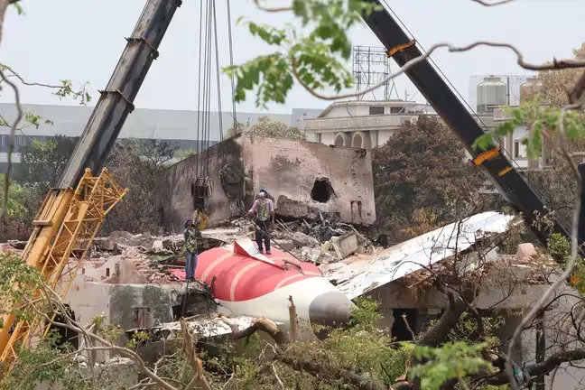

Revelan la causa más probable del accidente de avión en India
El informe señala que, según los datos de la grabadora del vuelo, los dos interruptores de control de combustible, que normalmente se utilizan para encender o apagar los motores en tierra, fueron cambiados de la posición de "marcha" (run) a la de "corte" (cutoff) poco después del despegue. Esto provocó que ambos motores perdieran empuje.
El informe añade que, en la grabación de voz de la cabina del Boeing 787-8 de Air India, se escucha a uno de los pilotos preguntándole al otro por qué había cambiado la posición de los interruptores.
Según el informe, el otro piloto respondió que no lo había hecho. No se especifica a quién pertenece cada voz. En el momento en que la aeronave despegó era el copiloto quien pilotaba el avión, mientras que el comandante supervisaba. Los interruptores fueron colocados luego de nuevo en su posición normal de vuelo, algo que iniciaría automáticamente el proceso de reencendido de los motores.